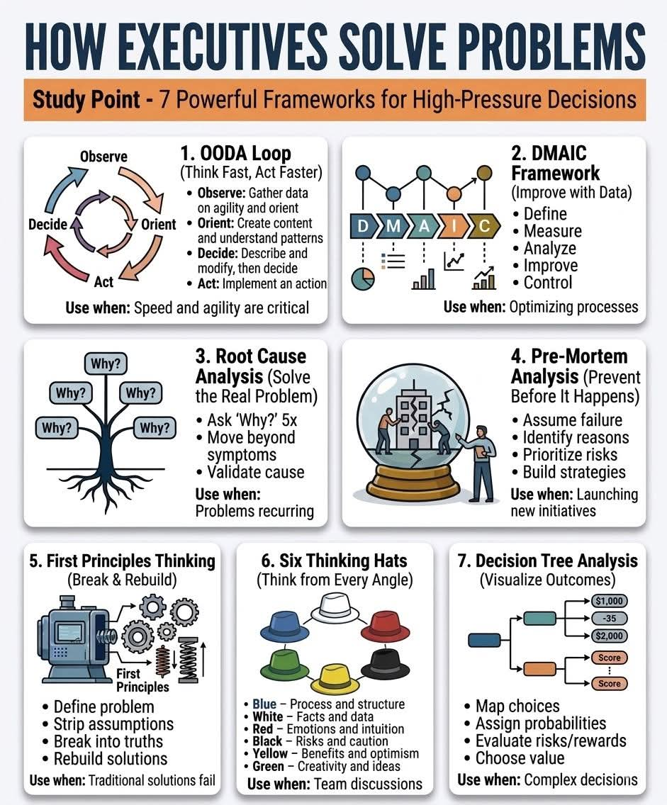

Kabut tipis masih menyelimuti lembah Ciumbuleuit ketika jam digital di dinding kantor Parahyangan Capital menunjukkan pukul enam pagi. Di lantai lima belas sebuah gedung perkantoran elit di kawasan Dago, Bandung, tiga orang eksekutif telah terjaga sepenuhnya. Aroma kopi seduh manual yang berasal dari biji kopi arabika Pangalengan menguar di udara, bercampur dengan dinginnya pendingin ruangan dan dengungan pelan dari deretan layar monitor yang menyala.
Parahyangan Capital bukanlah firma investasi biasa. Mereka adalah pengelola reksa dana lindung nilai, atau hedge fund, yang bermain di liga algoritma kuantitatif dan analisis makroekonomi global, namun memilih beroperasi dari ketenangan kota kembang alih-alih hiruk-pikuk Sudirman, Jakarta. Alasannya sederhana: udara yang dingin mendinginkan server dengan lebih efisien, dan lingkungan yang tenang menjernihkan pikiran dari kebisingan pasar.
Pagi itu, ketenangan Bandung tidak tercermin di dalam ruangan tersebut. Indeks Harga Saham Gabungan (IHSG) diprediksi akan dibuka dengan kejatuhan tajam menyusul pengumuman regulasi pembatasan ekspor komoditas nikel secara mendadak oleh pemerintah pusat semalam. Bagi Parahyangan Capital, yang memiliki posisi panjang dan signifikan pada sektor pertambangan dan energi terbarukan, ini adalah sinyal bahaya level merah.
Di ujung meja oval berbahan kayu jati padat, duduk Adrian. Pria berusia pertengahan empat puluhan ini adalah pendiri sekaligus Manajer Portofolio utama. Kemeja putihnya digulung hingga siku, matanya yang tajam menatap rentetan angka merah yang berkedip pada layar terminal data keuangannya. Ia adalah tipe pemimpin yang metodis, percaya bahwa setiap kekacauan memiliki struktur matematis yang bisa diurai.
Di sebelah kirinya, jemari Bima menari cepat di atas keyboard mekanikal. Bima adalah Kepala Strategi Kuantitatif. Lulusan matematika terapan dari salah satu institut teknologi terbaik di Bandung ini adalah otak di balik sistem perdagangan algoritmik perusahaan. Usianya belum genap tiga puluh tahun, sangat agresif, dan selalu berpikir dalam kecepatan milidetik.
Sementara itu, berdiri di dekat jendela kaca raksasa yang menghadap ke Gunung Tangkuban Perahu, adalah Nadia. Sebagai Direktur Manajemen Risiko, tugas utamanya adalah menjadi suara akal sehat yang pesimistis. Nadia, yang memegang gelar ganda dalam bidang aktuaria dan psikologi perilaku, memiliki keahlian luar biasa dalam melihat titik buta yang sering dilewatkan oleh keangkuhan algoritma. Ia memegang secangkir teh kamomil, menatap nanar ke arah kota yang perlahan terbangun.
Krisis telah tiba di ambang pintu mereka. Dan layaknya para eksekutif yang terlatih dalam tekanan tinggi, mereka tidak bereaksi dengan kepanikan emosional, melainkan dengan kerangka kerja yang telah teruji waktu.
"Pasar berjangka di Singapura sudah anjlok empat persen," Bima memecah kesunyian, suaranya diiringi suara ketukan tuts keyboard. "Sistem peringatan dini kita menyala untuk seluruh portofolio sektor material dasar. Berita pembatasan ekspor ini tidak ada dalam model sentimen kita minggu lalu."
Adrian mengusap wajahnya, lalu menegakkan punggung. "Bima, apa yang dikatakan OODA Loop milikmu?"
Bima memutar kursinya, menatap layar yang menampilkan grafik volatilitas. Ia mengandalkan kerangka OODA Loop (Observe, Orient, Decide, Act) peninggalan strategi militer yang kini diadopsi oleh para pialang saham berfrekuensi tinggi untuk menjaga kelincahan di pasar yang bergerak cepat.
"Pertama, kita melakukan Observasi," Bima mulai menjelaskan dengan cepat. "Data mentah menunjukkan aksi jual massal dari institusi asing di pasar offshore sejak berita keluar. Kedua, Orientasi. Saya menyesuaikan model kita. Pola ini mengindikasikan bahwa kepanikan bukan hanya tentang komoditasnya, tetapi kekhawatiran atas stabilitas regulasi. Ini akan merembet ke sektor perbankan yang memberikan kredit ke perusahaan tambang."
Nadia berbalik dari jendela, berjalan mendekati meja. "Lalu, Keputusannya?"
"Keputusan saya, kita modifikasi eksposur kita sekarang. Kita harus segera mengeksekusi lindung nilai. Lakukan penjualan singkat (short sell) pada indeks sektor keuangan sebagai proksi, sebelum pasar lokal menyadari efek dominonya saat bel pembukaan nanti," tegas Bima. "Tindakan. Algoritma sudah siap mengeksekusi pesanan saat prapembukaan."
Adrian mengangguk pelan. Kecepatan adalah kunci di menit-menit pertama kepanikan pasar. "Lakukan, Bima. Nyalakan algo lindung nilai itu, tetapi batasi modalnya pada dua puluh persen dari total eksposur risiko harian kita. Kita butuh kelincahan, bukan pertaruhan buta."
Begitu pasar dibuka pada pukul sembilan pagi, prediksi Bima terbukti benar. Layar-layar di ruangan itu berubah menjadi lautan merah. Indeks turun tajam. Namun, berkat eksekusi cepat OODA Loop Bima, portofolio mereka menahan benturan jauh lebih baik daripada indeks acuan.
Meski begitu, satu aset dalam portofolio mereka terus mengalami pendarahan hebat. Saham PT Bumi Energi Nusantara (BEN), sebuah perusahaan rintisan nikel yang transisi ke baterai kendaraan listrik, harganya anjlok hingga lima belas persen. Parahyangan Capital memegang posisi yang cukup besar di perusahaan ini.
"Lindung nilai kita menahan kerugian makro, tetapi posisi pada BEN menggerus Alpha kita hari ini," kata Adrian, menganalisis data secara metodis. "Kita perlu mengoptimalkan proses evaluasi kita. Mari kita gunakan kerangka DMAIC."

Nadia mengambil spidol dan berjalan ke papan tulis putih di dinding ruangan. "Baik. Define, tentukan masalahnya. Masalah kita adalah penurunan tajam nilai investasi pada BEN yang melampaui toleransi risiko harian kita."
"Measure, ukur dampaknya," sambung Bima, membaca metrik dari layarnya. "Kita sedang drawdown tiga persen pada portofolio secara keseluruhan, semata-mata ditarik oleh BEN. Volume penjualan BEN saat ini lima kali lipat dari rata-rata pergerakan harian."
Adrian menyela, "Sekarang Analyze, analisis alasannya. Mengapa saham BEN bereaksi lebih buruk dibandingkan perusahaan tambang konvensional lainnya padahal model bisnis mereka berfokus pada hilirisasi yang seharusnya didukung pemerintah?"
Nadia menatap papan tulis. "Untuk bagian analisis ini, kita tidak bisa hanya melihat angka. Kita harus menggali lebih dalam. Mari kita gunakan Analisis Akar Masalah dengan metode Lima Mengapa (5 Whys)."
Ia menulis angka satu sampai lima di papan tulis.
"Mengapa harga BEN anjlok ekstrem?" tanya Nadia, menatap Bima dan Adrian bergantian.
"Karena investor membuang sahamnya pagi ini," jawab Bima logis.
"Mengapa investor membuangnya lebih cepat dari saham lain?" Nadia mengejar dengan pertanyaan kedua.
"Karena ekspektasi pendapatan mereka kuartal ini pasti hancur," kata Adrian, memajukan tubuhnya ke meja.
"Mengapa pendapatan mereka sangat bergantung pada kuartal ini?"
"Karena arus kas bebas (free cash flow) mereka negatif. Mereka sedang membangun pabrik peleburan raksasa di Morowali yang memakan biaya besar."
"Mengapa pabrik peleburan itu tiba-masing menjadi risiko sistemik sekarang?" tanya Nadia untuk keempat kalinya.
Bima terdiam sejenak, matanya menelusuri laporan keuangan BEN di layar sebelahnya. "Karena... sebagian besar bahan baku pabrik itu berasal dari tambang afiliasi mereka yang baru saja dicabut izin ekspornya, dan mereka berencana menggunakan pendapatan ekspor sementara untuk mendanai sisa konstruksi pabrik."
Nadia melingkari pernyataan Bima di papan tulis dengan spidol merah. "Dan inilah pertanyaan kelima: Mengapa kita sebagai pengelola dana luput memperhitungkan bahwa aliran dana konstruksi mereka sangat rentan terhadap kebijakan ekspor jangka pendek?"
Ruangan menjadi hening. Adrian menyandarkan punggungnya ke kursi dengan berat. "Kita terlalu fokus pada narasi besar kendaraan listrik, dan mengabaikan gejala masalah likuiditas jangka pendek mereka. Akar masalahnya bukan kebijakan pemerintah, akar masalahnya adalah struktur pendanaan BEN yang rapuh, dan kegagalan kita memvalidasi sebab akibat dalam model valuasi kita. Ini masalah yang berulang setiap kali kita terpesona oleh narasi makro."
"Langkah Improve dari DMAIC," kata Nadia tegas, "adalah kita harus segera menyesuaikan model valuasi kita untuk memperhitungkan risiko regulasi pada arus kas operasional. Dan langkah Control-nya adalah menambahkan metrik ketahanan likuiditas sebagai syarat mutlak sebelum kita menambah posisi di sektor apa pun yang berkaitan dengan komoditas."
Menjelang siang, kepanikan awal di pasar mulai mereda dan berganti menjadi pesimisme yang lambat. Indeks memerah secara konsisten. Namun, bagi para manajer investasi, saat darah tumpah di jalanan (walaupun hanya darah virtual dalam bentuk piksel merah), saat itulah peluang muncul.
Bima mematikan sistem perdagangan otomatis sementaranya. Ia menatap Adrian dan Nadia dengan kilatan antusiasme yang sering muncul ketika ia menemukan celah dalam matriks pasar.
"Saya punya proposal," kata Bima, suaranya sedikit bergetar karena adrenalin. "Alih-alih memotong kerugian (cut loss) pada saham BEN seperti yang dilakukan semua manajer reksa dana ritel saat ini, saya sarankan kita menggandakan posisi kita. Kita beli lebih banyak saham BEN."
Nadia membelalakkan matanya, menghentikan gerakan cangkir tehnya di udara. "Bima, apakah kamu sudah kehilangan kewarasan kuantitatifmu? Perusahaan itu baru saja kehilangan setengah jalur pendanaan konstruksinya."
"Solusi tradisional mengatakan kita harus lari saat fundamental jangka pendek terganggu," jawab Bima dengan percaya diri. "Namun solusi tradisional gagal hari ini. Saya mengusulkan kita berpikir menggunakan Prinsip Pertama (First Principles Thinking). Mari kita bongkar dan bangun ulang dari nol."
Adrian memberi isyarat dengan tangannya. "Jelaskan. Definisikan masalahnya tanpa asumsi pasar yang ada."
Bima bangkit dan berjalan menuju layar proyeksi. "Asumsi pasar saat ini adalah: BEN tidak bisa mengekspor, arus kas kering, pembangunan pabrik mangkrak, nilai perusahaan hancur. Ini adalah pemikiran analogi, meniru apa yang terjadi pada perusahaan tambang lain di masa lalu."
"Sekarang, mari kita lucuti asumsi itu dan pecah menjadi kebenaran fundamental," lanjut Bima. "Kebenaran satu: Apakah BEN masih memiliki cadangan nikel di dalam tanah? Ya, ratusan juta ton. Kebenaran dua: Apakah dunia, dan Indonesia khususnya, masih membutuhkan baterai untuk transisi energi? Fakta mutlak, ya. Kebenaran tiga: Apakah teknologi peleburan yang sedang dibangun BEN sudah usang? Tidak, itu adalah teknologi High-Pressure Acid Leach generasi terbaru."
Bima menatap kedua rekannya dengan intens. "Dari kebenaran fundamental ini, kita bangun kembali solusinya. Masalah BEN saat ini hanyalah kemacetan likuiditas, bukan kebangkrutan operasional. Dan di mana mereka berlokasi? Indonesia. Pemerintah menginginkan hilirisasi. Negara tidak akan membiarkan proyek hilirisasi bernilai triliunan rupiah ini gagal hanya karena masalah arus kas jangka pendek. Bank-bank BUMN pada akhirnya akan turun tangan memberikan fasilitas kredit sindikasi untuk menyelamatkan proyek strategis nasional ini."
Adrian mengangguk perlahan, meresapi logika tersebut. "Jadi, berdasarkan prinsip pertama, nilai intrinsik aset BEN tetap utuh, yang rusak hanyalah sentimen sementara. Harga saham saat ini salah harga (mispriced) karena kepanikan irasional."
Meskipun argumen Bima menggunakan Prinsip Pertama terdengar masuk akal dan sangat brilian secara teori, Nadia, sebagai pengawal risiko perusahaan, tidak akan membiarkan keputusan bernilai puluhan miliar rupiah dieksekusi hanya berdasarkan satu kerangka pemikiran dari seorang pemuda brilian yang sedang dipompa adrenalin.
"Argumen yang indah, Bima," kata Nadia dengan nada tenang namun memegang kendali. "Namun sebelum kita mengeksekusi pesanan beli, kita akan menggunakan metode Enam Topi Berpikir (Six Thinking Hats). Kita butuh diskusi tim yang komprehensif, melihat ini dari setiap sudut yang memungkinkan."
Nadia mengambil posisi di depan. "Saya akan memakai Topi Biru. Saya mengatur proses dan struktur diskusi ini. Kita akan secara bergiliran menganalisis proposal Bima untuk membeli saham BEN di saat harga anjlok."
Ia menunjuk Adrian. "Topi Putih. Fakta dan data, Adrian."
Adrian membuka spreadsheet di tabletnya. "Faktanya, saham BEN turun 18% hari ini. Valuasi Price-to-Book mereka sekarang berada di angka 0.8, terendah dalam sejarah perusahaan. Kas di neraca keuangan per kuartal lalu adalah empat ratus miliar rupiah. Beban utang jatuh tempo dalam enam bulan ke depan adalah dua ratus miliar. Secara objektif, mereka bisa bertahan enam bulan tanpa injeksi modal baru, namun ekspansi mereka terhenti."
"Bagus," kata Nadia. "Sekarang, Topi Merah. Emosi dan intuisi. Bima, bagaimana perasaan intuitifmu tentang pasar lokal saat ini?"
"Pasar sedang ketakutan berlebihan," kata Bima cepat. "Investor ritel panik karena margin call, memaksa mereka melikuidasi posisi. Intuisi saya sebagai seorang trader mengatakan, ini adalah titik kapitulasi maksimal. Ini bau darah, dan kita adalah hiunya."
"Topi Hitam," sahut Nadia, memakai perannya sendiri sebagai manajer risiko. "Risiko dan kehati-hatian. Bagaimana jika asumsi Bima salah? Bagaimana jika intervensi pemerintah untuk menyelamatkan pabrik BEN tidak pernah datang? Bagaimana jika pemegang saham mayoritas BEN memutuskan untuk mendilusi saham secara ekstrem melalui penawaran hak memesan efek terlebih dahulu (rights issue) di harga bawah untuk mendapatkan modal? Posisi awal kita akan hancur lebur."
Ruangan kembali mendingin. Topi Hitam selalu membawa kembali realitas gravitasi. Namun Nadia tidak berhenti di situ.
"Topi Kuning," kata Nadia sambil menatap Bima. "Manfaat dan optimisme."
"Jika kita benar," Bima membalas dengan mata berbinar, "dan sentimen berbalik bulan depan ketika laporan keterlibatan perbankan BUMN diumumkan, saham ini akan melonjak lima puluh persen hanya untuk kembali ke harga wajarnya. Ini adalah potensi keuntungan asimetris terbaik kita kuartal ini."
Nadia beralih menatap pemandangan luar, mencari inspirasi sesaat sebelum berbalik kembali. "Topi Hijau. Kreativitas dan ide alternatif. Apakah ada cara lain selain membeli saham biasa mereka di pasar reguler?"
Adrian yang sedari tadi diam menganalisis, tiba-tiba menjentikkan jarinya. "Ada. Kita jangan beli sahamnya. Kita beli obligasi konversi (convertible bonds) mereka yang diperdagangkan di pasar sekunder. Harganya juga ikut anjlok. Jika mereka bangkrut, posisi kita sebagai pemegang obligasi ada di atas pemegang saham biasa dalam likuidasi. Jika mereka selamat dan harga saham naik, kita bisa mengonversi obligasi itu menjadi saham. Ini membatasi risiko kerugian (downside) tapi tetap mempertahankan potensi keuntungan (upside)."
Bima tersenyum lebar. "Sial, itu ide Topi Hijau yang sangat brilian, Adrian."
Sore hari mulai menjelang. Langit Bandung mulai berubah warna menjadi jingga keemasan. Keputusan harus segera diambil sebelum pasar ditutup pada pukul empat sore.
Mereka telah sepakat secara prinsip untuk mengeksekusi strategi pembelian obligasi konversi BEN. Namun, Nadia menahan tangan Adrian yang bersiap memberikan perintah kepada meja transaksi (trading desk).
"Satu langkah terakhir, para pria," kata Nadia dengan senyum tipis. "Kita meluncurkan inisiatif baru yang sangat berisiko. Kita harus melakukan Analisis Pre-Mortem."
Ia menatap tajam ke arah kedua rekannya. "Bayangkan sekarang adalah bulan April tahun 2027, tepat satu tahun dari hari ini. Bayangkan Parahyangan Capital bangkrut. Kita harus menutup kantor ini, memecat semua staf, dan mengembalikan sisa remah-remah modal kepada para investor dengan rasa malu yang luar biasa. Anggap kegagalan itu nyata. Sekarang pertanyaannya: Apa yang menyebabkan kita hancur terkait dengan keputusan obligasi BEN ini?"
Bima menelan ludah. Ia tidak suka membayangkan kegagalan, algoritmanya dirancang untuk menang. Namun ia mengerti tujuannya. "Kita hancur karena ternyata manajemen BEN melakukan penipuan laporan keuangan. Kas yang empat ratus miliar itu sebenarnya tidak ada, digunakan untuk menutup kerugian entitas anak perusahaan yang disembunyikan. Saat mereka gagal bayar, kita tertahan dalam proses PKPU (Penundaan Kewajiban Pembayaran Utang) selama bertahun-tahun tanpa hasil."
Adrian mengangguk setuju dengan skenario suram Bima. "Alasan lainnya, regulasi pemerintah tidak hanya berhenti pada larangan ekspor. Bagaimana jika mereka menasionalisasi paksa aset strategis BEN dengan harga diskon ekstrem atas nama kepentingan nasional? Pemegang obligasi mungkin hanya akan dibayar dua puluh sen untuk setiap satu dolar."
"Bagus," kata Nadia. "Dengan memprioritaskan risiko-risiko fatal sebelum itu terjadi, kita bisa membangun strategi mitigasi. Bima, lacak sejarah audit kap BEN, pastikan auditor mereka adalah firma independen tier satu tanpa rekam jejak cacat. Adrian, kita gunakan koneksi lobi kita di Jakarta untuk memastikan tidak ada draf undang-undang nasionalisasi yang beredar di komisi energi."
Tinggal satu jam sebelum pasar tutup. Adrian melangkah ke layar pintar interaktif di dinding dan memanggil aplikasi Analisis Pohon Keputusan (Decision Tree Analysis). Ini adalah puncak dari seluruh proses rasionalisasi mereka untuk keputusan yang kompleks.
Dengan jarinya, ia menggambar sebuah simpul (node) awal di sebelah kiri layar. "Pilihan: Beli Obligasi Konversi BEN senilai lima puluh miliar rupiah."
Ia menarik garis cabang pertama ke kanan. "Skenario A: Operasi BEN pulih dan diselamatkan bank BUMN. Berdasarkan analisis sentimen dan fundamental kita, kita menetapkan probabilitas (kemungkinan) ini terjadi sebesar 65%." Ia menulis angka probabilitas di atas cabang tersebut. "Nilai imbal hasil dari obligasi yang dikonversi menjadi saham di skenario ini adalah keuntungan sekitar tiga puluh miliar rupiah."
Ia menarik cabang kedua ke bawah. "Skenario B: BEN stagnan, tidak ada penyelamatan tetapi tidak bangkrut. Mereka terus membayar kupon obligasi. Probabilitas 25%. Keuntungan berupa yield obligasi sebesar empat miliar rupiah setahun."
Ia menarik cabang ketiga paling bawah. "Skenario C: Kebangkrutan atau restrukturisasi utang paksa. Skema Pre-Mortem kita terwujud. Probabilitas 10%. Kerugian maksimal dari nilai pemulihan (recovery value) yang rendah adalah minus dua puluh miliar rupiah."
Adrian kemudian menghitung nilai ekspektasi (Expected Value). "0.65 dikali 30 miliar, ditambah 0.25 dikali 4 miliar, ditambah 0.1 dikali minus 20 miliar. Nilai ekspektasi matematis kita adalah positif delapan belas setengah miliar rupiah. Pohon keputusan mengonfirmasi bahwa secara probabilitas dan risiko terbobot, ini adalah pertaruhan (bet) yang sangat logis dan bernilai tinggi."
Adrian membalikkan badannya menghadap Nadia dan Bima. Tidak ada lagi kepanikan pagi hari. Tidak ada lagi adrenalin yang meledak-ledak. Yang tertinggal hanyalah ketajaman kalkulasi yang dingin dan terstruktur dari para profesional yang mengetahui batas-batas permainan mereka.
"Bima," kata Adrian, suaranya pelan namun penuh otoritas.
"Ya, Pak?"
"Eksekusi pesanannya. Beli obligasi konversi BEN di pasar sekunder sekarang. Beli terus secara bertahap hingga harga penutupan."
Suara ketukan keyboard Bima kembali terdengar, kali ini stabil dan pasti. "Pesanan masuk. Menggunakan algoritma Time-Weighted Average Price untuk menyamarkan jejak pembelian kita dari radar pialang lain. Eksekusi berjalan lancar."
Nadia berjalan perlahan mendekati meja tengah. Ia meletakkan cangkir tehnya yang sudah kosong. Ia melirik layar OODA Loop milik Bima, catatan 5 Whys dan Topi Berpikirnya di papan tulis, serta Pohon Keputusan yang bercahaya di layar interaktif Adrian.
"Kerja bagus, semuanya," ucap Nadia pelan, melihat jam menunjukkan pukul 16:05 WIB. Bel penutupan perdagangan pasar modal Indonesia telah berbunyi. Indeks secara keseluruhan hancur lebur pada hari itu, meninggalkan banyak manajer portofolio di Jakarta pusing memikirkan penjelasan untuk klien mereka esok hari.
Namun di ketinggian Dago, di sebuah kantor dengan udara pendingin yang mendinginkan server yang tak kenal lelah, tiga eksekutif itu telah menavigasi kekacauan. Mereka telah membongkar masalah yang rumit menjadi komponen yang dapat diukur, menguji asumsi mereka sendiri dengan kejujuran yang brutal, mengevaluasi setiap titik buta, dan memetakan probabilitas masa depan ke dalam sebuah pilihan.
Adrian melonggarkan gulungan lengan kemejanya. Ia memandang ke luar jendela, di mana lampu-lampu kota Bandung mulai menyala satu per satu, membentuk konstelasi bintang di atas tanah, sebuah representasi dari jutaan variabel kecil yang menyala dalam perekonomian setiap detiknya.
"Pasar akan terus berusaha menjatuhkan kita," gumam Adrian lebih kepada dirinya sendiri. "Regulasi akan berubah, algoritma akan usang, krisis akan datang dari arah yang tidak kita duga."
Ia berbalik tersenyum pada Nadia dan Bima. "Tetapi selama kita memiliki kerangka kerja untuk memecahkan masalah, kita tidak sekadar bereaksi terhadap pasar. Kita mendikte probabilitasnya."
Sore itu, di Parahyangan Capital, ekuilibrium akhirnya tercapai. Bukan dari tidak adanya masalah, melainkan dari keberhasilan menaklukkan kepanikan melalui proses yang logis. Mereka menutup terminal komputer mereka, mematikan lampu ruangan, dan membiarkan algoritma serta strategi mereka bekerja dalam keheningan malam, siap menyambut lembaran fluktuasi yang baru pada keesokan harinya.